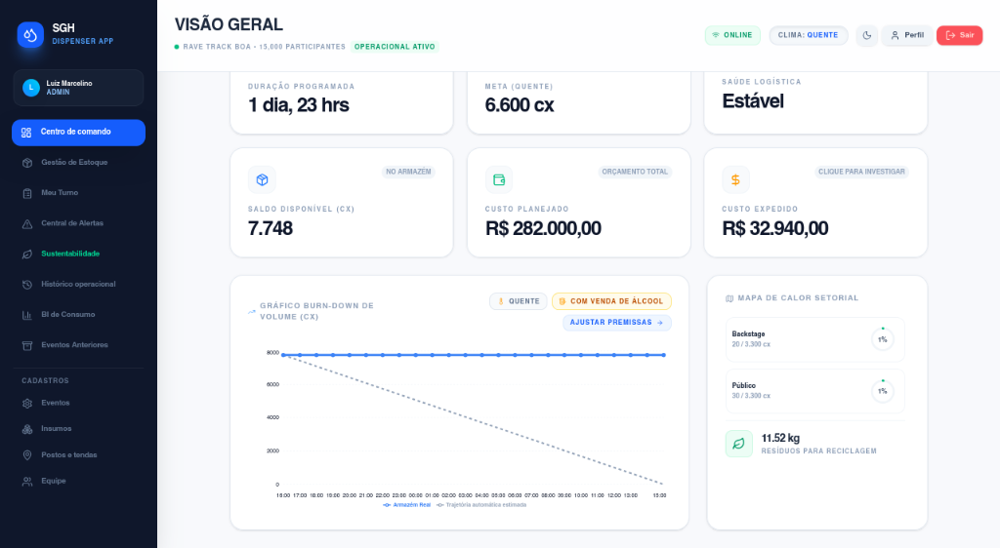

CONSUMO
Quanto está sendo consumido?
O SGH conecta tecnologia, monitoramento e gestão para dar mais visibilidade à operação hídrica do seu evento, ajudando sua equipe a acompanhar o consumo e tomar decisões com mais informação.
Tecnologia desenvolvida para operações de eventos em tempo real.

Em eventos de grande porte, disponibilizar água é apenas uma parte do desafio. É preciso planejar pontos, acompanhar a demanda, organizar abastecimento, mobilizar equipes e responder rapidamente às mudanças durante a operação.
E quando você não consegue enxergar a operação, fica muito mais difícil gerenciá-la.
Você sabe o que está acontecendo com a hidratação do seu evento enquanto ele acontece?
Quanto está sendo consumido?
Quais pontos apresentam maior demanda?
Em quais momentos o consumo aumenta?
Onde sua equipe precisa atuar?
O que os dados podem ensinar para o próximo?
Uma operação pode estar funcionando, mas isso não significa que esteja sendo otimizada. Sem informações consolidadas, decisões acabam sendo tomadas apenas depois que o problema aparece.
Situações comuns na operação
O que você não consegue medir, dificilmente consegue otimizar.
Uma plataforma criada para transformar a gestão hídrica do evento em uma operação orientada por dados.
Tenha visibilidade sobre os pontos e informações da operação em tempo real.
Transforme dados brutos em indicadores inteligentes e padrões de consumo.
Use informações consolidadas para apoiar decisões operacionais mais ágeis e assertivas.
Seu evento precisa de água. Sua operação precisa de dados.
O SGH conecta a operação física à inteligência digital.
Os pontos de hidratação geram informações acompanhadas pela plataforma.
Os dados da operação são organizados em um ambiente único e seguro.
A equipe acompanha indicadores relevantes para a operação em tempo real.
Os dados ajudam a identificar padrões, demandas e comportamentos do público.
A informação apoia decisões estratégicas durante e após o evento.
Tenha uma visão mais clara do comportamento da hidratação durante o evento.
Informações centralizadas ajudam a equipe a responder mais rapidamente.
Acompanhe diferentes pontos de hidratação em uma única plataforma.
Transforme informações de consumo em indicadores para análise operacional.
Preserve dados e utilize experiências anteriores para melhorar o planejamento.
Identifique padrões e oportunidades para tornar a operação mais eficiente.
É sobre saber o que está acontecendo na sua operação.
É transformar consumo em informação.
Informação em análise.
E análise em decisão.
O SGH aproxima a gestão daquilo que acontece no campo, criando uma ponte entre a infraestrutura física e a tomada de decisão.
Por trás de uma experiência simples existe uma arquitetura desenvolvida para suportar informação, estabilidade, segurança e expansão.
Conectividade entre a infraestrutura física e a plataforma.
Visualização das informações relevantes da operação de forma intuitiva.
Registro e organização confiável das informações geradas durante o evento.
Arquitetura preparada para diferentes operações e volumes de público.
Estrutura pensada para proteção e confiabilidade contínua dos dados.
Estrutura para atender diferentes clientes e operações de forma independente.
Cada evento possui características próprias. O SGH foi concebido para acompanhar diferentes cenários operacionais.
Festivais
Shows e grandes concertos
Arenas e estádios
Eventos corporativos
Eventos culturais
Eventos esportivos
Eventos de grande circulação
Feiras e exposições
Mais informação para apoiar o planejamento e a operação.
Mais visibilidade sobre a estrutura e disponibilidade de hidratação.
Uma solução tecnológica para agregar inteligência à entrega do projeto.
Mais controle e indicadores sobre operações recorrentes.
Dados consolidados para apoiar decisões antes, durante e depois.
A hidratação costuma ser tratada como uma necessidade operacional básica. O SGH propõe transformar a hidratação em uma fonte contínua de dados estratégicos para a gestão.
Informações reunidas em uma plataforma única e intuitiva.
Dados pensados especificamente para quem toma decisões no campo.
Integração perfeita entre o ambiente físico e o digital.
Informações consolidadas para apoiar os próximos eventos.
Conceito e arquitetura preparados para diferentes portes e operações simultâneas.
Os dados gerados durante a operação apoiam diretamente o planejamento das próximas experiências.
O próximo evento não precisa começar do zero.
Uma operação mais sustentável começa pela capacidade de compreender seus próprios indicadores. O SGH apoia análises detalhadas de consumo, eficiência operacional e redução de desperdícios.
O SGH é uma ferramenta de apoio à gestão e à eficiência da operação sustentável.
Uma estrutura pensada para suportar operações que exigem organização, confiabilidade e estabilidade sob alto volume.
Estrutura organizada para facilitar evolução e manutenção contínua.
Boas práticas para proteção das informações e controle rigoroso de acesso.
Estrutura preparada para crescer junto com as necessidades da sua produtora.
Tecnologia modular desenvolvida para receber novos recursos e integrações.
O SGH nasce da união entre conhecimento de ponta em tecnologia e experiência prática na produção e operação de grandes eventos.
Em breve
Em breve
Em breve
Em breve
A melhor tecnologia é aquela que resolve problemas reais.
O SGH — Sistema de Gestão Hídrica — é uma plataforma digital SaaS desenvolvida para organizar, monitorar e gerar inteligência sobre a operação de água em eventos. A plataforma centraliza os registros da operação em um único ambiente, permitindo acompanhar abastecimento, distribuição, consumo, movimentações e indicadores em tempo real. O objetivo é transformar uma operação que normalmente depende de controles manuais e informações dispersas em uma gestão mais previsível, rastreável e eficiente.
O SGH é exclusivamente uma plataforma digital. Não fornecemos dispensers, filtros, bebedouros, reservatórios ou outros equipamentos físicos. O SGH atua na camada de gestão, controle, monitoramento e inteligência da operação hídrica. Você mantém sua infraestrutura e seus fornecedores, enquanto o SGH organiza os dados e ajuda sua equipe a tomar decisões com mais rapidez e precisão.
Sim. A plataforma foi projetada para ser escalável e pode ser utilizada em diferentes formatos de eventos, desde convenções e eventos corporativos até festivais, shows, arenas e grandes operações com múltiplos pontos de hidratação. A configuração pode variar de acordo com o porte do evento, número de pontos de água, equipes envolvidas, volume de operação e quantidade de usuários.
Não. O SGH funciona em ambiente de nuvem e pode ser acessado por smartphones, tablets ou computadores, utilizando um navegador compatível. Não é necessária a instalação de servidores ou uma infraestrutura tecnológica dedicada no local do evento. É recomendável, entretanto, que a equipe responsável tenha acesso a uma conexão de internet estável para realizar os registros e acompanhar as informações da operação.
O SGH pode operar por meio dos registros realizados pela própria equipe de campo. À medida que a operação acontece, os responsáveis registram informações como abastecimento, movimentação, distribuição e disponibilidade nos pontos de água. Esses dados são consolidados pela plataforma e transformados em indicadores, permitindo ao gestor acompanhar a operação e identificar situações que exigem atenção.
A plataforma pode ser estruturada para receber diferentes fontes de dados, mas o funcionamento básico do SGH não depende da instalação de sensores físicos. Isso permite que a solução seja utilizada mesmo em operações que não possuem infraestrutura de IoT. Em futuras integrações, sensores e outros dispositivos poderão ampliar o nível de automação e coleta de dados da operação.
Sim. Cada operação pode ser registrada e armazenada na plataforma, criando um histórico de dados dos eventos realizados. Isso permite comparar operações, identificar padrões de consumo, avaliar necessidades de abastecimento e utilizar dados anteriores para melhorar o planejamento de eventos futuros.
Não. O SGH não substitui a equipe operacional. Ele fornece ferramentas para que ela trabalhe de forma mais organizada e coordenada. O gestor passa a ter uma visão centralizada da operação e pode direcionar as equipes de abastecimento e logística com base em informações atualizadas. Na prática, o SGH ajuda a transformar a equipe de campo em uma operação mais coordenada, ágil e orientada por dados.
O SGH foi desenvolvido para auxiliar a organização, o controle e o registro da operação hídrica. A plataforma permite documentar informações relevantes, como volumes registrados, abastecimentos, distribuição e disponibilidade dos pontos de água, gerando relatórios que podem auxiliar na prestação de contas, auditorias e processos de fiscalização. A conformidade legal, entretanto, depende também da infraestrutura disponibilizada, da qualidade e potabilidade da água, dos fornecedores contratados e do cumprimento das demais exigências aplicáveis ao evento.
O acompanhamento e a atualização dos dados em tempo real dependem de conexão com a internet. Por isso, recomendamos que a produção disponibilize uma conexão estável para a equipe responsável pela operação, podendo utilizar rede dedicada ou dados móveis como alternativa. O planejamento de conectividade deve fazer parte da preparação operacional do evento.
A infraestrutura tecnológica necessária é simples:
Não é necessária a instalação de servidores ou equipamentos tecnológicos específicos para utilizar a plataforma.
Os alertas são gerados a partir dos parâmetros definidos para a operação. Quando um ponto de água atinge uma condição que exige atenção, a informação é apresentada à equipe responsável, permitindo que o gestor priorize o atendimento e acione o reabastecimento. Isso ajuda a equipe a atuar de forma preventiva, em vez de esperar que um ponto fique completamente desabastecido.
O SGH permite acompanhar a operação de forma centralizada e identificar pontos que apresentam maior demanda. Com essas informações, o gestor consegue priorizar o reabastecimento, redistribuir esforços da equipe e antecipar situações de maior consumo. O resultado é uma operação mais organizada e com maior capacidade de resposta durante os períodos de pico.
Não. O SGH não realiza tratamento, filtragem ou fornecimento de água. A responsabilidade pela qualidade, potabilidade, tratamento e infraestrutura física da água permanece com a produção do evento e/ou com os fornecedores responsáveis por esses serviços. O SGH atua exclusivamente na gestão, controle, registro e inteligência da operação hídrica.
A plataforma organiza dados que podem ajudar a mensurar e demonstrar os resultados da operação hídrica. A partir dos registros realizados, é possível acompanhar indicadores como volume de água disponibilizado, movimentação de insumos e histórico das operações. Essas informações podem contribuir para relatórios de sustentabilidade, prestação de contas a patrocinadores e comunicação dos resultados ambientais do evento, conforme os indicadores efetivamente registrados.
Sim. A plataforma pode oferecer oportunidades de ativação de marcas e comunicação com as equipes envolvidas na operação, de acordo com o formato comercial contratado. Isso abre uma possibilidade interessante para transformar a operação hídrica em um novo espaço de relacionamento com patrocinadores, sem interferir na função principal do sistema.
Sim. O modelo de atendimento prevê orientação e preparação da equipe antes da operação, além de suporte remoto durante o período contratado. O objetivo é garantir que gestores e operadores tenham apoio para utilizar corretamente a plataforma e solucionar eventuais dificuldades durante o evento.
O SGH foi pensado para ter uma implantação simples. Após a contratação, são realizadas as configurações necessárias da operação, o cadastro dos usuários e dos pontos de água e a orientação da equipe responsável. O prazo de implantação pode variar conforme o porte e a complexidade do evento.
O SGH utiliza o modelo SaaS — Software as a Service, permitindo contratar o acesso à plataforma de acordo com a necessidade da operação. Os formatos comerciais podem considerar fatores como:
A proposta comercial é definida de acordo com o perfil de cada operação.
Atualmente, o SGH opera de forma nativa em sua própria plataforma em nuvem. Nesta fase, não disponibilizamos uma API pública para integrações externas. Entretanto, a arquitetura da solução pode evoluir para integrações com outros sistemas e fontes de dados conforme as necessidades dos clientes e o desenvolvimento do produto.
O acesso às informações é controlado de acordo com os usuários e permissões definidos para cada operação. Isso permite separar funções entre gestores, operadores e demais usuários autorizados, evitando que todos tenham necessariamente acesso às mesmas informações.
Sim. As informações registradas ficam associadas às respectivas operações, permitindo construir um histórico de dados. Esse histórico pode ser utilizado para análises comparativas, planejamento de futuras operações e identificação de padrões de consumo e abastecimento.
Não necessariamente. Embora a gestão hídrica seja o foco principal da plataforma, a estrutura do SGH foi pensada para trabalhar com dados operacionais, logística, equipes, pontos de distribuição e indicadores. Isso cria possibilidades futuras de expansão para outras necessidades de gestão relacionadas à infraestrutura e operação de eventos.
O principal benefício é transformar a gestão hídrica de uma operação baseada em planilhas, mensagens, controles manuais e decisões reativas em uma operação centralizada e orientada por dados.
Com o SGH, o produtor ganha:
O SGH não fornece apenas um sistema para registrar informações. Ele transforma os dados da operação hídrica em informação para tomada de decisão.
Descubra como o SGH pode transformar a gestão hídrica da sua próxima operação. Nossa equipe apresenta a plataforma e analisa as características exclusivas do seu evento.
Solicitar demonstraçãoSem compromisso. Conheça a plataforma e descubra o impacto positivo do SGH.
E-mail comercial
contato@sghdispenser.com